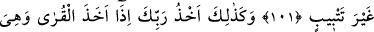
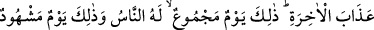

ZULMEDEN KAVİMLERİN
ÂKIBETİ
100. (Ey Muhammed,) işte bu (halkı
helâk
olmuş)
memleketlerin
haberlerindendir. Biz onu sana anlatıyoruz. Onlardan (bugüne kadar izleri) kalan
da, biçilmiş ekin (gibi yok olan) da vardır.
101. Biz onlara zulmetmedik, fakat onlar kendilerine zulmettiler. Rabb’inin emri
geldiği zaman onların Allah’ı bırakıp da yalvardıkları tanrıları, onlara hiçbir şey
sağlamadı ve ziyanlarını artırmaktan başka bir işe yaramadı.
102. İşte Rabb’in zulmeden memleketleri yakaladığı zaman böyle yakalar.
Doğrusu O’nun yakalaması çok acı ve pek çetindir.
103. İşte bunda âhiret azâbından korkanlar için elbette bir ibret vardır. O gün
bütün insanların toplandığı bir gündür ve o gün (bütün mahlûkâtın) hazır
bulunduğu bir gündür.
104. Biz onu sadece sayılı bir müddete kadar erteliyoruz.
Ey Muhammed, “işte bu” yani geride bahsi geçen tüm haberler, ahâlîsinin irtikâp
ettiği suçlar sebebiyle helâk edilen “memleketlerin haberlerindendir.” onların
haberlerinden bir kısmıdır. Peygamberliğine delâlet etsin diye “biz bunları sana
anlatıyoruz. Onlardan” yani bu kasabalardan Âd ve Semûd yurtları gibi gövdeleri
üzerinde duran bitkiler misâli bugüne kadar izleri “kalan da, biçilmiş ekin” gibi yok
olan “da vardır.” Onlardan kiminin izi de Lût ve Nûh kavminin şehirleri gibi tıpkı
biçilip hasad edilmiş ekinler misali yok olup gitmiştir.
Kâşifî der ki: Bu memleketlerden ayakta kalanlar bugüne kadar kalmış ve mamur
vaziyettedir. Biçilmiş ekin gibi olanlar ise yok veya harap olmuştur.